<!DOCTYPE html>
<html lang="pt-BR">
<head>
<script type="text/javascript">
    (function(c,l,a,r,i,t,y){
        c[a]=c[a]||function(){(c[a].q=c[a].q||[]).push(arguments)};
        t=l.createElement(r);t.async=1;t.src="https://www.clarity.ms/tag/"+i;
        y=l.getElementsByTagName(r)[0];y.parentNode.insertBefore(t,y);
    })(window, document, "clarity", "script", "yn210flvy6");
<!-- Google tag (gtag.js) -->
<script>
  window.dataLayer = window.dataLayer || [];
  function gtag(){dataLayer.push(arguments);}
  gtag('js', new Date());

  gtag('config', 'G-T9KJ7E1B84');
<meta charset="UTF-8">
<meta name="viewport" content="width=device-width, initial-scale=1.0">
<title>Installing and Upgrading N1MM Logger+ — Manual N1MM+ em Português</title>
<meta name="description" content="Tradução não-oficial, feita pela comunidade brasileira de radioamadorismo, sobre como instalar e atualizar o N1MM Logger+.">
<meta property="og:title" content="Installing and Upgrading N1MM Logger+ — Manual N1MM+ em Português">
<meta property="og:description" content="Tradução não-oficial, feita pela comunidade brasileira de radioamadorismo, sobre como instalar e atualizar o N1MM Logger+.">
<meta property="og:image" content="https://n1mm.gg52floripadx.com/assets/img/og-image.png">
<meta property="og:url" content="https://n1mm.gg52floripadx.com/getting-started/installing-and-upgrading-n1mm-logger/index.html">
<meta property="og:type" content="website">
<meta property="og:site_name" content="Manual N1MM+ em Português">
<meta name="twitter:card" content="summary_large_image">
<meta name="twitter:title" content="Installing and Upgrading N1MM Logger+ — Manual N1MM+ em Português">
<meta name="twitter:description" content="Tradução não-oficial, feita pela comunidade brasileira de radioamadorismo, sobre como instalar e atualizar o N1MM Logger+.">
<meta name="twitter:image" content="https://n1mm.gg52floripadx.com/assets/img/og-image.png">
<link rel="stylesheet" href="../../assets/css/style.css">
<link rel="icon" href="../../assets/favicon-32.jpg" sizes="32x32">
<link rel="icon" href="../../assets/favicon.jpg" sizes="192x192">
<link rel="apple-touch-icon" href="../../assets/favicon.jpg">
</head>
<body>

<div class="topo">
  <div class="marca">
    <a href="https://n1mm.gg52floripadx.com/">Manual N1MM+ em Português</a>
    <a href="../index.html">&larr; Voltar para Getting Started</a>
  </div>
</div>

<div class="aviso-traducao">
  <div class="conteudo">
    📖 <strong>Tradução não-oficial</strong>, mantida pela comunidade brasileira de radioamadorismo.
    Página original em inglês: <a href="https://n1mmwp.hamdocs.com/getting-started/installing-and-upgrading-n1mm-logger/" target="_blank" rel="noopener">n1mmwp.hamdocs.com/getting-started/installing-and-upgrading-n1mm-logger</a>.
    Direitos autorais do conteúdo original: N1MM Logger+ Team.
  </div>
</div>

<main>
  <nav class="trilha">
    <a href="https://n1mm.gg52floripadx.com/">Início</a> &raquo;
    <a href="../index.html">Getting Started</a> &raquo;
    Installing and Upgrading N1MM Logger+
</nav>

  <h1>Installing and Upgrading N1MM Logger+ <span class="tag-en">EN: Installing and Upgrading N1MM Logger+</span></h1>

  <h2 id="first-time-installation">First-Time Installation Instructions (Instruções de Instalação na Primeira Vez)</h2>

  <p><strong>Por favor, note</strong> — Essas instruções se aplicam tanto para usuários de primeira vez quanto para usuários experientes do N1MM Logger Classic que estão começando a usar o N1MM Logger+. Note que você pode deixar o N1MM Logger Classic instalado no seu PC e até continuar usando-o <strong>alternadamente</strong> com o N1MM Logger+. <strong>Só não tente rodar os dois simultaneamente.</strong></p>

  <h3 id="installing">Installing (Instalando)</h3>

  <p>O N1MM Logger+ adotou a convenção do Windows para locais de arquivos, então você deve conseguir instalar os <strong>arquivos do programa</strong> nos locais padrão fornecidos pelo instalador. O N1MM Logger+ é um aplicativo de 32 bits que funciona igualmente bem nas versões de 32 bits ou 64 bits do Windows. Nos sistemas de 32 bits, os arquivos do programa são instalados em <strong>C:\Program Files\N1MM Logger+</strong>. Nas versões de 64 bits do Windows, os arquivos do programa do N1MM Logger+ são instalados em <strong>C:\Program Files (x86)\N1MM Logger+</strong>. Em ambos os tipos de sistemas, todos os arquivos de usuário e dados usados pelo programa serão instalados em outro lugar, ou seja, <strong>não</strong> no mesmo local que os arquivos do programa.</p>

  <p>Os arquivos de usuário/dados <strong>não devem</strong> estar no caminho C:\Program Files ou C:\Program Files (x86). Por padrão, se você não estiver usando um sistema de backup em nuvem como OneDrive, o local dos arquivos de dados de usuário estará na sua unidade de disco rígido, dentro da sua pasta <strong>Documents</strong>, em uma subpasta chamada <strong>N1MM Logger+</strong>. <strong>A menos que você esteja usando um sistema de backup em nuvem como OneDrive, recomendamos aceitar os locais padrão e instalar para um único logon do Windows. Se você precisar de mais de um, suas opções estão aqui</strong> (seção Software Setup do manual, ainda não traduzida).</p>

  <p>Se você estiver usando um sistema de backup em nuvem como OneDrive, o local dos arquivos de dados de usuário não deve estar na nuvem ou em um local que seja automaticamente feito backup para a nuvem. Nessa situação, as instruções de instalação devem ser modificadas; veja a seção abaixo intitulada <strong>"N1MM Logger+ and OneDrive"</strong>.</p>

  <p>Quando o instalador cria pela primeira vez a área de arquivos de dados de usuário, ele também cria vários subpastas onde o programa espera encontrar arquivos de dados para vários fins. Aqui está o conteúdo da pasta de arquivos/dados de usuário quando ela é criada pela primeira vez:</p>

  <figure>
    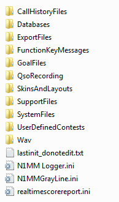
  </figure>

  <p>Esta pasta é importante, porque o programa procura nessas subpastas pelos arquivos de suporte de que ele precisa — coisas como seus arquivos de mensagens armazenadas, arquivos de histórico de indicativos, etc. Quando criados ou modificados pelo N1MM Logger+, os arquivos são colocados nas suas pastas corretas, mas se você quiser mover arquivos de sua instalação do N1MM Classic, você precisa movê-los para a pasta Documentos apropriada. Qualquer arquivo .wav usado para contests SSB deve ser armazenado na pasta Wav; se você usar a macro {OPERATOR} para arquivos wave com vozes de operadores individuais, esses arquivos wave devem ser armazenados em subpastas dentro da pasta Wav intituladas com o indicativo do operador.</p>

  <p><strong>Certifique-se de não apagar os quatro arquivos abaixo das pastas.</strong></p>

  <p><strong>Durante uma instalação completa (Full Install), o instalador baixa os chamados arquivos de "pré-requisitos" da internet. Por isso, certifique-se de estar conectado à internet ao fazer um Full Install. Além disso, certifique-se de que outros programas que possam estar usando componentes de sistema que fazem parte da instalação (como programas de modo digital) não estão sendo executados quando você faz o Full Install.</strong></p>

  <h4 id="onedrive">N1MM Logger+ and OneDrive</h4>

  <p>Se você usar OneDrive ou um sistema de backup em nuvem semelhante, as instruções de instalação devem ser modificadas para evitar corrupção de arquivos de banco de dados que podem resultar se uma operação de backup em nuvem automatizada ocorrer enquanto o programa está rodando. Se você está instalando o N1MM Logger+ em um computador que já foi configurado para usar OneDrive (ou Google Drive ou Dropbox) para fazer backup do conteúdo da pasta Documentos, o instalador pode recusar a configurar sua área de arquivos de usuário dentro do caminho OneDrive (ou equivalente). Quer faça isso ou não, no ponto em que a área de arquivos de usuário está sendo configurada, você deve escolher um local no seu disco rígido que não esteja dentro do caminho do OneDrive, e que também não esteja protegido pelo sistema operacional (ou seja, não esteja dentro dos caminhos Program Files ou Program Files (x86)). Sugerimos que você escolha um local como <strong>C:\N1MM Logger+</strong> ou <strong>C:\HamRadio\N1MM Logger+</strong> como o local para seus arquivos de dados de usuário.</p>

  <p>Será que isso significa que você não consegue fazer backup de seus arquivos de dados do N1MM Logger+? Não, na verdade recomendamos que você use algum tipo de estratégia de backup para esses arquivos, mas infelizmente um sistema de backup automatizado pode não ser adequado. Qualquer que seja a estratégia que você escolher, você deve garantir que ela nunca tente fazer backup da área de arquivos de usuário enquanto o programa N1MM Logger+ está rodando, pois isso pode causar corrupção dos arquivos de banco de dados. O programa N1MM Logger+ deve ser encerrado antes de fazer backup dos arquivos de usuário, seja o backup para a nuvem, para outra unidade de disco ou outro meio de armazenamento, ou para outro computador em rede. Você pode até usar o armazenamento em nuvem OneDrive para armazenar backups se quiser; apenas certifique-se de não deixar o OneDrive fazer os backups automaticamente, porque mais cedo ou mais tarde um desses backups automatizados vai acontecer enquanto o Logger está rodando e vai corromper seu banco de dados de log.</p>

  <div class="caixa-alerta">
    <strong>O que fazer se o Windows Update move seus arquivos para o OneDrive</strong>
    <p>Mesmo após ter instalado com sucesso o N1MM Logger+ com a área de arquivos de usuário na sua pasta Documents no disco rígido, e talvez até já estar usando-o com sucesso há algum tempo, o OneDrive ainda pode afetar sua instalação. Isso é porque a estratégia da Microsoft é de mover agressivamente o armazenamento de usuários para o OneDrive. Se a conta de usuário que você usa para fazer login no seu computador é uma conta Microsoft, o Windows Update pode silenciosamente mover todos os seus Documentos, Fotos e áreas de arquivo semelhantes para o OneDrive, possivelmente incluindo sua área de arquivos de usuário do N1MM Logger+. Na primeira vez que o N1MM Logger+ é iniciado após a atualização, você pode ver uma mensagem de erro indicando que o programa foi incapaz de abrir seu banco de dados de log. Se isso acontecer com você, seu melhor recurso é reinstalar o N1MM Logger+ com uma nova área de arquivos de usuário fora do OneDrive, da seguinte forma:</p>
    <ul>
      <li>Baixe o Full Installer mais recente e o instalador de atualização mais recente do site do N1MM Logger+.</li>
      <li>Execute o Full Installer. Ele vai instalar os arquivos do programa em <strong>C:\Program Files\N1MM Logger+</strong> ou <strong>C:\Program Files (x86)\N1MM Logger+</strong>; isso está certo, o OneDrive não afeta essa parte da instalação.</li>
      <li>Quando o Full Installer pergunta onde instalar a área de arquivos de usuário, escolha algum lugar fora do caminho do OneDrive e também fora do caminho do Program Files; por exemplo, <strong>C:\N1MM Logger+</strong>.</li>
      <li>Assim que o Full Installer tiver terminado, não execute o programa ainda. Antes de tentar iniciar o N1MM Logger+, primeiro encontre onde o Windows Update moveu seus arquivos de usuário anterior. O caminho pode ser semelhante ao caminho que você configurou originalmente durante sua instalação anterior, exceto que OneDrive pode aparecer como parte do caminho. Assim que tiver encontrado esse local, copie todo o conteúdo da pasta N1MM Logger+ antiga, incluindo subpastas, para a nova pasta que foi criada pelo Full Installer. Depois renomeie a pasta de arquivo de usuário antiga, por exemplo de <strong>N1MM Logger+</strong> para <strong>Old N1MM Logger+</strong>. Isso servirá como um lembrete de que a pasta antiga não é o lugar correto para baixar novos arquivos (arquivos UDC, arquivos Call History, arquivos de mensagem de function key, etc.). Algum tempo depois, uma vez que você tenha usado com sucesso o programa com a nova localização por um tempo, e se tiver certeza de que todos os arquivos que você possa querer no futuro (incluindo arquivos de banco de dados antigos e logs antigos) estão com segurança armazenados na nova pasta de arquivos de usuário ou em outro lugar, você pode decidir deletar a pasta Old N1MM Logger+ e suas subpastas para reduzir as chances de confusão, mas por agora apenas deixe-as lá.</li>
      <li>Agora execute o programa atualizador para a atualização mais recente para colocar sua instalação em dia. Você deve estar de volta aos negócios.</li>
      <li>Os caminhos de arquivo usados pelo programa são relativos à área de arquivos de usuário principal. Se houver qualquer dúvida sobre a localização da área de arquivos de usuário principal, você pode usar o item de menu <strong>Help &gt; Open Explorer on User Files Directory</strong> no programa para encontrar a pasta que o programa usa (juntamente com suas subpastas) para todos os seus dados e arquivos de usuário.</li>
      <li>Copiar toda a área de arquivos de usuário <em>em massa</em> deve preservar todos os links de arquivo relativos no programa. Uma exceção pode ser as entradas na lista de logs abertos recentemente no final do menu Arquivo se esses logs abertos recentemente estavam em arquivos de banco de dados diferentes do arquivo de banco de dados aberto no momento. Se houver quaisquer desses links no seu menu Arquivo, você pode ser forçado a usar os itens de menu <strong>File &gt; Open Database</strong> e <strong>File &gt; Open Log in Database</strong> em vez de pular diretamente para esse log a partir da parte inferior do menu Arquivo. Esse problema se corrigirá rapidamente conforme novas entradas forem adicionadas à lista com informações de caminho atualizado, deslocando as antigas com informações de caminho desatualizado.</li>
      <li>Se você está usando o programa a partir de mais de uma conta de usuário do Windows, então o procedimento acima só vai mover a área de arquivos de usuário para a primeira conta de usuário. Para mover a área de arquivos de usuário para outras contas de usuário para fora das áreas de arquivo de Documentos para essas contas, você vai precisar adicionar um argumento de linha de comando <strong>UserDir=</strong> aos atalhos a partir dos quais o programa é executado, designando a nova localização da área de arquivo de usuário.</li>
    </ul>
  </div>

  <h4 id="security">Avoiding Security Problems During Installation (Evitando Problemas de Segurança Durante a Instalação)</h4>

  <p>As configurações de segurança no Windows ou no software anti-malware no seu computador podem interferir com a capacidade de baixar e executar programas de instalação, como o Full Installer do N1MM+ e os instaladores de atualização mais recentes. Se o Windows recusar baixar um instalador, verifique Windows Settings &gt; Update &amp; Security &gt; Windows Security &gt; App &amp; browser control &gt; Reputation-based protection settings. Se a proteção baseada em reputação estiver ativada, seu navegador pode recusar baixar arquivos de instalador, ou pode baixá-los mas bloqueá-los de serem executados. Se seu navegador recusar baixar o arquivo de instalador, desligue a proteção baseada em reputação e tente novamente.</p>

  <p>Se o arquivo de instalador é baixado com sucesso mas uma janela do Windows Defender SmartScreen rotulada "Windows protected your PC" aparece quando você tenta executá-lo, procure por um botão "Run anyway" nessa tela. Você pode precisar clicar em um link "More info" para fazer esse botão aparecer. Se não houver um botão "Run anyway", ou de forma mais geral se o programa de instalador simplesmente não executar quando você tenta executá-lo (com ou sem uma janela SmartScreen), você pode clicar com botão direito no arquivo de instalador no Explorer (provavelmente em sua pasta Downloads) e procurar por um botão chamado "Unblock" perto do canto inferior direito na aba General, com uma explicação que diz "This file came from another computer and might be blocked to help protect this computer." Clique no botão "Unblock" para desbloquear o arquivo e permita que seja executado.</p>

  <p>O N1MM Logger+ usa vários arquivos .dll e .ocx — por exemplo, o inpout32.dll é usado como sua interface para portas LPT, e o n1mmv5wav.ocx alimenta as funções de gravação e reprodução de áudio. Várias disposições de segurança no Windows, bem como vários softwares de segurança de pós-venda, podem impedir a instalação ou registro desses arquivos.</p>

  <p>Alguns passos simples podem contornar esses problemas. Primeiro, baixe o Full Installer e os instaladores de atualização mais recentes para um diretório regular (não-temporário) no seu disco rígido. Depois, quando você executar o Full Install, clique com botão direito no nome do arquivo e selecione "Run as Administrator". Isso pode ser necessário mesmo se sua conta de usuário tenha privilégios de Administrador.</p>

  <p>Depois que você executar os instaladores Full e Latest Update como Administrador, todos os arquivos .dll e .ocx necessários devem ser adequadamente registrados. Se você está usando a porta paralela (LPT) para CW, PTT ou seleção de antena, você também vai precisar executar o programa em si pela primeira vez clicando com botão direito e selecionando "Run as Administrator", para que alguma reorganização de arquivo interno possa ocorrer. Isso não deve ser necessário depois — apenas execute normalmente a partir de um ícone de desktop ou atalho.</p>

  <h3 id="windows-settings">Windows Settings that may affect program operation (Configurações do Windows que podem afetar a operação do programa)</h3>

  <p>Há algumas configurações padrão no Windows que podem afetar a forma como o programa opera. Para evitar problemas, é sugerido que você mude essas configurações. Note que essas mudanças estão no Windows, não no N1MM Logger+.</p>

  <p>A primeira tem a ver com hubs USB (portas). O comportamento padrão do Windows para hubs USB é desligá-los para economizar energia após um período de inatividade. Infelizmente, a única atividade de que o Windows parece estar ciente é a atividade de teclado ou mouse. Uma porta USB que está sendo usada para algo mais, como um adaptador USB-serial, parece ao Windows como se estivesse inativa, e o Windows pode desligar esse hub USB após alguns minutos. Isso vai fazer com que a porta pare de funcionar, e se você entrar no Configurer para fazer mudanças, o programa não conseguirá abrir a porta quando você sair do Configurer.</p>

  <p>A solução vem em dois passos, mas primeiro, <strong>certifique-se de que o dispositivo USB com o qual você está tendo problema está conectado à sua porta.</strong> Agora abra o Gerenciador de Dispositivos (Device Manager), expanda a seção em Controladores USB Universais (Universal Serial Bus controllers), e depois abra cada entrada rotulada "Generic USB Hub", "USB Root Hub" ou "USB 3.0 eXtensible Host Controller" (ou algo similar), abra seu diálogo de Propriedades, selecione a aba Power Management, e desmarque a caixa de seleção chamada "Allow the computer to turn off this device to save power".</p>

  <p>A segunda envolve Power Options no Painel de Controle. Você pode não encontrar todas essas configurações em cada sistema, mas cada sistema rodando N1MM Logger+ ou qualquer outro software de log em tempo real deve ser definido para minimizar as "economias de energia" do Windows.</p>

  <p>Abra o Painel de Controle e selecione Power Options. Um dos "Planos" será "High Performance" — selecione-o. Depois clique "Change plan settings" e defina "put the computer to sleep" para "never". Se encontrado, também selecione "Change advanced power settings" e defina "Sleep | Hibernate after" para "Never" e "Allow hybrid sleep" para "Off". Em "USB Settings" defina "USB selective suspend setting" para "Disabled" e em "PCI Express" defina "Link State Power Management" para "Off". Também defina "Wireless adapter Settings" para "Maximum Performance".</p>

  <p>Essas configurações devem impedir que o computador vá dormir, desligue portas USB e desabilite a interface de rede quando ele estiver conectado — quando você quer manter tarefas de fundo rodando.</p>

  <p>Há uma terceira configuração que pode exigir atenção no Windows 10 e 11. No aplicativo Windows Settings, selecione Privacy, e depois entre as funções no lado esquerdo da janela, selecione Microphone. Uma opção deve aparecer chamada "Let apps use my microphone". Defina essa opção para On. A partir da atualização Spring 2018 do Windows 10, o Windows interpreta essa opção se aplicar a todas as entradas de placa de som, não apenas à entrada do microfone na placa de som padrão. Se essa opção estiver definida para Off, nem o N1MM Logger+ nem nenhum dos outros programas que ele usa para decodificar modos digitais, etc. terão permissão de acesso a nenhuma entrada de placa de som.</p>

  <p>Conectar ou desconectar um dispositivo de placa de som enquanto outro dispositivo de placa de som está em uso ativo pode fazer com que a placa de som ativa pare de funcionar e/ou mude sua posição na lista de dispositivos de placa de som em programas como MMTTY. Corrigir isso pode exigir entrar na configuração do programa que usa a placa de som e reconfigurar a(s) placa(s) de som naquele programa.</p>

  <p>Se você tiver um monitor que inclua um dispositivo de placa de som conectado ao computador via um cabo HDMI, quando o monitor entra em modo de proteção de tela, a placa de som também pode ser desabilitada. Mesmo que você não esteja usando aquela placa de som específica, outras placas de som conectadas àquele computador podem de repente parar de funcionar ou ficar indisponíveis. Se isso acontecer com você, para evitar que aconteça novamente, você pode desabilitar o modo de proteção de tela naquele monitor, ou desabilitar o dispositivo de placa de som embutido do monitor.</p>

  <p>Aqui está outra dica que não tem nada a ver com gerenciamento de energia ou placas de som, e não afeta realmente a operação do programa, mas pode ter um impacto na sua capacidade de encontrar alguns dos arquivos do N1MM Logger+. No Windows Explorer, sob a opção Ferramentas (Tools), selecione Folder Options. Clique na aba View, e procure na lista uma caixa de seleção chamada "Hide extensions for known file types". O padrão para essa opção é marcado, exigindo que você identifique tipos de arquivo apenas pelos seus ícones. Se você deixar no padrão, você pode ter problemas para encontrar arquivos referenciados na documentação ou por pessoas dando instruções de ajuda no grupo de usuários. Se houver arquivos com nomes de arquivo similares exceto por diferentes extensões, você pode ter problemas para dizer qual é qual. Desmarcar essa opção vai fazer os nomes de arquivo completos ficar visíveis no Windows Explorer, o que vai tornar a depuração de problemas muito mais fácil.</p>

  <p>Sobre as configurações de hora do Windows, você não tem que definir seu computador para UTC para conseguir tempos UTC no seu log, mas você pode certamente fazer isso. Se você definir seu computador para seu fuso horário correto, incluindo a configuração correta de DST, e definir o tempo do computador para corresponder ao seu tempo local, o Windows e o N1MM Logger+ entre eles vão cuidar do resto.</p>

  <p>Você pode até mesmo operar direto através da mudança de horário de verão em março ou novembro (por exemplo, durante Sweepstakes CW) e enquanto você verá o display de hora do seu computador mudar por uma hora às 2 da manhã se você olhar de perto, o N1MM Logger+ não fará nem um movimento; ele vai logar todos os seus contatos com o tempo UTC correto.</p>

  <h3 id="beginning">Beginning the Installation (Começando a Instalação)</h3>

  <p>Essas instruções são especificamente para a primeira instalação em um computador. Veja a seção abaixo sobre Installing the Latest Update para instruções sobre atualizações subsequentes.</p>

  <p>Baixe o Full Install da área de Arquivos (Files) no site n1mmplus.</p>

  <p>O instalador completo será um arquivo com um nome na forma N1MM Logger+ FullInstaller x.yy.zzzz.exe. Enquanto você estiver na área de Downloads do site, dê também uma olhada nos Latest Updates <a href="https://n1mmwp.hamdocs.com/mmfiles/categories/programlatestupdate/" target="_blank" rel="noopener">aqui</a>. Se houver um arquivo de atualização com um número de versão zzzz que seja mais alto que o número zzzz no arquivo de instalador completo, também baixe esse arquivo. Assim que o instalador completo tiver terminado, você vai querer executar o instalador de atualização para colocar o programa instalado na versão atualmente suportada.</p>

  <p>Antes de começar o processo de instalação, se você estiver executando outros programas que usam os mesmos componentes de sistema (incluindo programas de modo digital como 2Tone e WinWarbler), desligue esses programas. Agora execute o programa de instalação completo. O Windows vai dar o prompt padrão de instalação perguntando se você quer permitir que o programa faça mudanças — responda "Yes" (Sim). Você deve então ver o seguinte diálogo de boas-vindas:</p>

  <figure>
    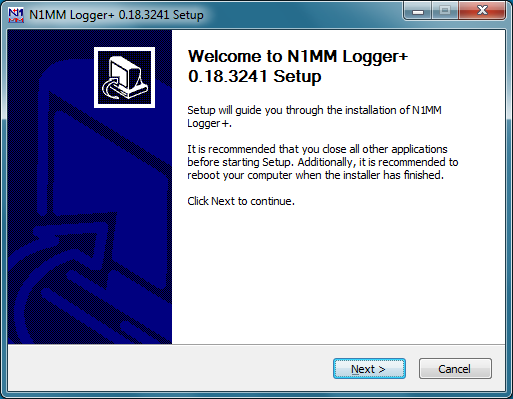
  </figure>

  <p>Clique em Next (Próximo). Você será solicitado a concordar com uma licença de freeware direta:</p>

  <figure>
    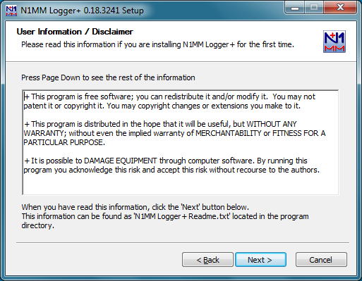
  </figure>

  <p>Clique em Next. Você receberá uma escolha de arquivos para instalar. No momento do lançamento inicial, há apenas uma opção, mas em alguma data futura outros componentes opcionais podem ser adicionados, e este diálogo será onde você escolhe as opções a serem instaladas:</p>

  <figure>
    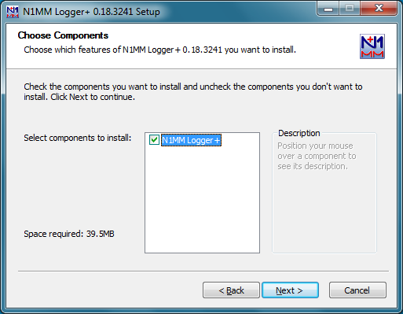
  </figure>

  <p>O N1MM Logger+ exige dois locais de instalação separados. Um é para o programa em si, mais arquivos de suporte que nunca são mudados exceto pelo instalador de atualização. O outro local é para todos os arquivos que podem ser escritos pelo programa durante a operação ou pelo usuário, para armazenar preferências definidas pelo usuário e informações de suporte; estas incluem os bancos de dados, arquivos ini, logs de erro, arquivos de mensagem de function key, arquivos de histórico de indicativos, arquivos de país, arquivos super check partial, arquivos wav, gravações qso, arquivos de contest definidos pelo usuário (UDC), e assim por diante.</p>

  <p>O primeiro local, para o programa em si, tem como padrão <strong>C:\Program Files\N1MM Logger+</strong> em sistemas de 32 bits, ou <strong>C:\Program Files(x86)\N1MM Logger+</strong> em sistemas de 64 bits. Para quase todos os usuários, esse local padrão é adequado e não deve ser mudado. A janela de diálogo em que esse local é especificado se parece com isto:</p>

  <figure>
    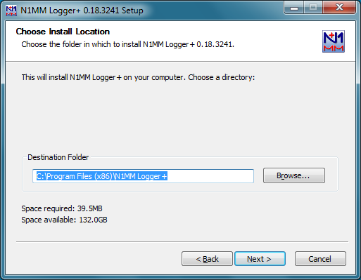
  </figure>

  <p>O segundo local, para arquivos que podem ser modificados pelo usuário ou programa, tem como padrão um local dentro de sua pasta <strong>Documents</strong>. No Windows Vista, Windows 7 e sistemas mais novos, isso está em <strong>C:\Users\[Seu Nome de Usuário do Windows]\Documents\N1MM Logger+</strong> (no Windows XP SP3, isso seria <strong>C:\Documents and Settings\[Seu Nome de Usuário do Windows]\My Documents\N1MM Logger+</strong>). Para um sistema de usuário único típico, este padrão é apropriado, e mesmo em sistemas de múltiplos usuários é sugerido que você aceite o padrão para a instalação inicial.</p>

  <div class="caixa-alerta">
    <strong>Não Instale em um Servidor em Nuvem ou Backup em Nuvem!</strong>
    <p>Se você está usando algum tipo de backup em nuvem, como DropBox, Google Drive ou OneDrive no Windows 10 ou 11, você não deve instalar a área de arquivos de usuário na nuvem, nem mesmo em um local que seja sincronizado com a nuvem, porque a operação de sincronização tem sido observada corromper os arquivos de banco de dados do programa. Certifique-se de que o local onde o instalador coloca a área de arquivos de usuário está no seu disco local (não deve haver OneDrive, GoogleDrive ou Dropbox em nenhum lugar no nome do caminho), mas não use um local dentro do caminho Program Files ou Program Files (x86). Se necessário, você pode criar uma nova pasta no nível superior da árvore de diretórios (por exemplo, C:\HamRadio) para onde você pode direcionar o instalador a colocar a área de arquivos de usuário.</p>
  </div>

  <figure>
    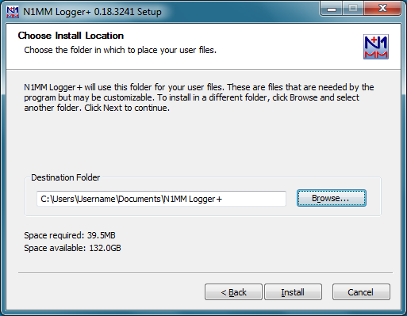
  </figure>

  <p>Quando você clica em Install, o Full Installer vai:</p>

  <ul>
    <li>Instalar todos os arquivos necessários no seu computador para rodar o N1MM Logger+</li>
    <li>Atualizar seus arquivos de sistema onde necessário</li>
  </ul>

  <p>Você vai perceber que certas partes da rotina de instalação do Full Installer levam bem tempo. O programa de instalação <strong>não</strong> falhou, então apenas deixe-o rodar até a conclusão. Atualizações subsequentes são muito mais rápidas. Depois que a instalação tiver terminado, você deve ver a seguinte janela:</p>

  <figure>
    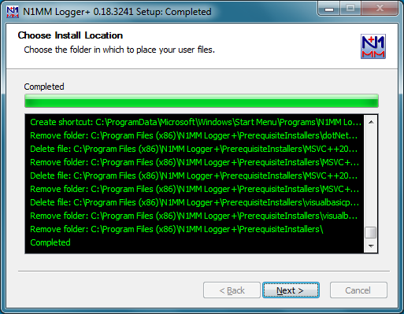
  </figure>

  <p><strong>Não Sobrescreva Arquivos de Sistema Mais Novos</strong></p>

  <p>Quando está executando o Full Installer, seu computador pode relatar que certos arquivos de sistema já estão instalados no seu sistema e são mais novos do que os que você está tentando instalar. Se ele pergunta se você quer substituir um arquivo mais novo existente por um arquivo mais antigo do Full Install, selecione 'Não'. Você não quer sobrescrever arquivos de sistema mais novos.</p>

  <p>Depois que você clica no botão Next, você verá a seguinte janela:</p>

  <figure>
    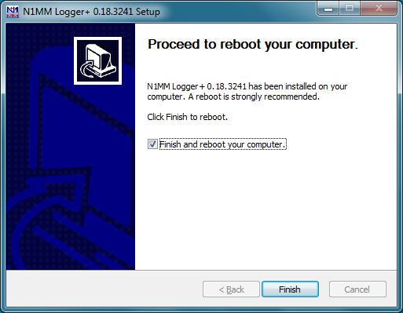
  </figure>

  <p>O processo de instalação requer que o computador seja reiniciado para finalizar a instalação de alguns arquivos de sistema (você deve estar familiarizado com isso pelo Windows Update e por outros processos de instalação de programa). Isso só acontece com o Full Installer, não com atualizações incrementais. Deixe a caixa de seleção "Finish and reboot the computer" marcada e clique em Finish. Você será solicitado mais uma vez a confirmar:</p>

  <figure>
    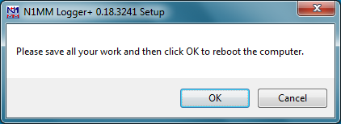
  </figure>

  <p>Depois que o computador reiniciar, se esta for a primeira vez que o N1MM Logger+ foi instalado no seu computador, o instalador vai pedir que você configure um banco de dados vazio inicial e entre com suas informações de estação naquele banco de dados. Se o instalador pedir que você procure pela pasta em que os arquivos de usuário serão colocados, certifique-se de que esta é a mesma pasta que foi especificada como a pasta de Arquivos de Usuário (User Files) no início do processo de instalação:</p>

  <figure>
    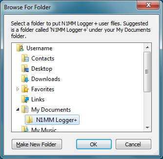
  </figure>

  <p>O próximo diálogo vai pedir que você crie um novo banco de dados. Você vai perceber que este diálogo também oferece a opção de converter um banco de dados N1MM Logger Classic mdb existente. Porque há uma possibilidade de que um banco de dados existente possa ter pequenos problemas que não o impeçam de funcionar no Classic mas possam fazer as rotinas de conversão tropeçar, é fortemente sugerido que neste ponto você crie um novo banco de dados. Há uma opção de menu em Logger+ para converter bancos de dados Classic para Plus que você pode usar mais tarde, mas na instalação inicial é mais seguro garantir que você tenha um banco de dados vazio novo de conhecido-bom para começar.</p>

  <p>Se esta é uma nova instalação, você pode ver uma mensagem de aviso sugerindo que seu arquivo ini pode estar corrompido e você deveria copiar de um arquivo .bak, mas se você vir tal mensagem em uma nova instalação completa, apenas ignore-a e selecione a opção para criar um novo banco de dados.</p>

  <figure>
    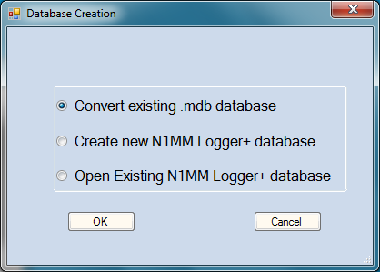
  </figure>

  <p>Escolha a opção "Create new N1MM Logger+ database" e clique em OK. Você será apresentado com um novo diálogo de arquivo em que você pode especificar o nome do novo banco de dados; o nome de arquivo padrão é ham.s3db. Você pode mudar "ham" para algo else, mas não mude a extensão de nome de arquivo. Não delete nenhum dos três arquivos que foram colocados lá pelo Instalador; o programa precisa desses arquivos além do novo banco de dados que você está criando.</p>

  <figure>
    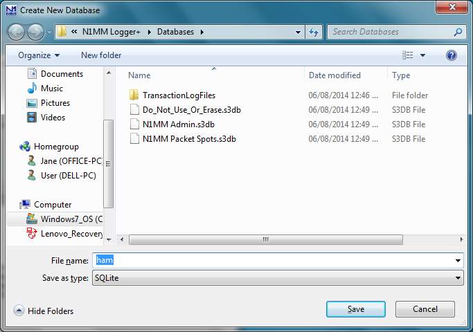
  </figure>

  <p>Finalmente, o programa vai apresentar o diálogo Edit Station Information:</p>

  <figure>
    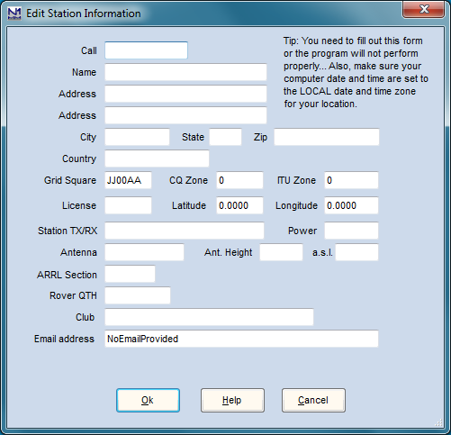
  </figure>

  <p>Preencha as informações neste diálogo. No mínimo absoluto, você vai precisar preencher a caixa Call e a caixa ARRL Section.</p>

  <p>A caixa Call contém o indicativo de estação que será usado para todos os logs de contest neste banco de dados; este é o indicativo que é emitido em cada linha de QSO em arquivos Cabrillo exportados. É também o indicativo que é inserido nas mensagens de function key usando as macros {MYCALL} e *.</p>

  <p>A caixa ARRL Section contém a seção ARRL/RAC para estações nos EUA, possessões dos EUA e Canadá; todas as outras estações devem preencher esta caixa com as letras DX. Esta caixa é usada em muitos contests, não apenas em contests ARRL, então mesmo que você não planeje entrar em nenhum contest ARRL, você deveria preenchê-la.</p>

  <p>Se você quer que o programa exiba headings de beam corretos para estações que você trabalha, você também deveria preencher a caixa Grid Square com o grid square correto para o local de onde você está operando. Fazer isto preencherá automaticamente sua Latitude e Longitude; alternativamente, você pode preencher a Lat e Long e o programa vai computar seu Grid Square.</p>

  <p>As caixas de nome e endereço são emitidas no cabeçalho de arquivos Cabrillo, então é recomendado que essas também sejam preenchidas. Note que este é seu endereço de correspondência, não necessariamente o endereço de onde você opera.</p>

  <p>A caixa Club denota o clube para o qual suas pontuações serão contadas em competições de clube naqueles contests que suportam isto.</p>

  <p>Uma vez que suas informações de estação tenham sido inseridas e armazenadas no banco de dados, o processo de instalação inicial está completo.</p>

  <h3 id="latest-update">Installing the Latest Update (Instalando a Atualização Mais Recente)</h3>

  <p>Depois que tiver completado a instalação inicial, você deve voltar para o site n1mmplus e encontrar o arquivo de atualização para a versão mais recente que encontrar lá. O instalador de versão atualizado terá um nome de arquivo na forma N1MM Logger+ Update x.yy.zzzz.exe. Se o número de versão zzzz for diferente de (mais alto que) o número de versão do full (ou sua instalação mais recente), você deveria baixar esse arquivo, iniciá-lo, e seguir seus passos simples (essencialmente os mesmos que os primeiros poucos passos do processo de instalação completa) para se colocar totalmente em dia. A atualização vai levar muito menos tempo para instalar que o full install.</p>

  <p>Note que as atualizações são cumulativas; você não precisa instalar todas as atualizações que encontrar no site, apenas a mais recente. Durante a fase inicial de teste beta, novos instaladores de atualização serão carregados frequentemente (provavelmente diariamente, pelo menos inicialmente). Sempre certifique-se de ter a atualização mais recente instalada antes de relatar bugs ou problemas.</p>

  <p>Também pode haver novas versões de instalador completo carregadas frequentemente durante testes de beta. Se houver um novo instalador completo com um número de versão mais novo do que o que você originalmente instalou, mas a primeira parte do número de versão (a parte x.yy) é a mesma de antes, você <strong>não</strong> precisa baixar ou executar este novo instalador completo. Apenas baixe a atualização com o novo número de versão e execute-a. A única vez que você precisa executar um novo instalador completo depois da primeira vez é quando a primeira parte do número de versão (x.yy) muda.</p>

  <div class="caixa-info">
    <strong>Uma Nota sobre Números de Versão do N1MM Logger+</strong>
    <p>O número de versão para lançamentos do N1MM Logger+ contém três componentes x.yy.zzzz (como em 0.18.3241). O primeiro componente, x, denota revisões de programa principais ou mudanças de status (por exemplo, "production" vs. "beta") e não é esperado que mude frequentemente. O segundo componente, yy, denota um nível de atualização principal. Quando você está fazendo atualizações, o "yy" no instalador de atualização deve concordar com o "yy" na versão já instalada. Se yy tiver sido mudado, você vai ter que passar pelo processo de Instalação Completa novamente com um novo Full Installer antes que possa instalar atualizações com o novo número de versão yy. O terceiro número, zzzz, é o número de atualização menor. Este número pode mudar com tanta frequência quanto várias vezes em um dia único conforme membros da equipe de desenvolvimento fazem mudanças. Não vai haver um novo instalador de atualização criado toda vez que este número muda, então não se surpreenda se os números em atualizações consecutivas diferem por mais de 1. Mudanças neste nível são sempre cumulativas, ou seja, você não precisa se preocupar com atualizações intermediárias, apenas baixe e instale a atualização mais recente (número de atualização menor mais alto) sobre o programa existente, contanto que o nível de atualização principal seja o mesmo.</p>
  </div>

  <h2 id="using-first-time">Using the Program the First Time (Usando o Programa na Primeira Vez)</h2>

  <h3 id="station-data">Edit Station Information (Editar Informações da Estação)</h3>

  <p>A primeira coisa a fazer depois de iniciar o programa é inserir suas informações de estação se você ainda não tiver feito isso. Este diálogo abrirá automaticamente com seu primeiro lançamento do N1MM Logger+. Para mudanças subsequentes, selecione Change Your Station Data a partir do menu Config na Entry Window.</p>

  <p>Seu diálogo de Station Data será similar a este. <strong>Note: um "dialog" é simplesmente uma janela em que você pode inserir informações. O termo é frequentemente usado intercambiavelmente com "window".</strong></p>

  <figure>
    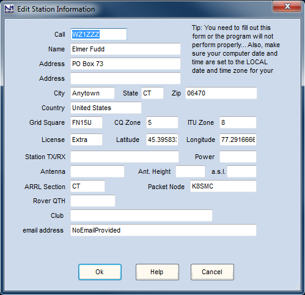
  </figure>

  <p>A informação neste diálogo é auto-explicativa, mas é muito importante que seja exata. A ARRL Section é usada para distinguir entre status dentro-do-estado e fora-do-estado para QSO parties, e entre W/VE e DX em vários contests ARRL. As zonas CQ e ITU são essenciais para alguns contests. Seu endereço postal completo é inserido no cabeçalho do arquivo Cabrillo, e diz aos organizadores de contest para onde enviar seu certificado. Para que o programa calcule headings de beam precisos, você vai precisar colocar sua longitude e latitude nas caixas de texto apropriadas; você pode fazer isso simplesmente inserindo seu grid square na caixa de grid square.</p>

  <p>Também certifique-se de que você insira seu call como o indicativo de estação, já que este será o indicativo que aparece em cada linha de QSO em seus arquivos Cabrillo. <strong>Não deixe nenhuma entrada de exemplo que possa estar nestes campos no início.</strong></p>

  <p>Muitas das caixas de texto neste diálogo são usadas ao criar contests ou durante contests.</p>

  <ul>
    <li><strong>ARRL Section</strong> e as caixas de texto State são usadas em alguns contests e QSO parties para determinar se você está dentro ou fora de um estado ou província. Estações dos EUA e do Canadá devem inserir sua abreviação de seção ARRL/RAC aqui. <strong>Estações não-US/VE devem inserir "DX" aqui.</strong></li>
    <li><strong>Latitude</strong> e <strong>Longitude</strong> são usadas para calcular a distância e bearing para outra estação/país (para contests HF)</li>
    <li>Para <strong>contests VHF</strong> (aqueles com VHF no nome do contest), a caixa de texto <strong>Grid Square</strong> (4 ou 6 dígitos) no diálogo de Station é usada para determinar bearings, em vez de latitude e longitude.</li>
    <li>O conteúdo das caixas de texto Latitude e Longitude é atualizado quando a caixa de texto Grid Square é mudada e vice-versa.</li>
    <li><strong>Club</strong> normalmente tem que estar totalmente escrito para ser aceito pelos organizadores de contest em contests com uma competição de clube, então por exemplo insira Yankee Clipper Contest Club em vez de YCCC.</li>
  </ul>

  <h2 id="adding-users">Adding N1MM Users (Adicionando Usuários do N1MM)</h2>

  <p>Este título aparentemente inocente realmente aborda uma área em que há mudanças bem significativas do N1MM Logger Classic, em particular porque da adoção dos padrões de armazenamento de arquivo de usuário do Windows descritos acima. Porque os arquivos de usuário são ligados ao nome de usuário logon atualmente em uso, os arquivos de Usuário A — não apenas bancos de dados, mas todos os tipos de arquivos armazenados na pasta de arquivos de usuário — não serão vistos quando o Usuário B faz logon no computador sob um nome de usuário do Windows diferente, ou usando o comando "Switch User" do Windows. Há vários maneiras de lidar com isto:</p>

  <ol>
    <li><strong>MÉTODO RECOMENDADO:</strong> Use uma identidade de logon único do Windows para todos os operadores, e use a função OPON (Ctrl+O) para identificar o operador para qualquer operação dada. Desta forma todos os arquivos de usuário serão compartilhados, exceto pelos arquivos .wav usados para mensagens de telefone armazenadas, que vão seguir o indicativo do operador. Os operadores podem configurar layouts individuais de Window com as funções Tools &gt; Save Window Positions e Restore Window Positions. Se desejado, os operadores também podem configurar seus próprios bancos de dados e trocar manualmente a partir do menu File. Este é o método que será mais familiar aos usuários do N1MM Logger Classic.</li>
    <li>Use identidades de logon individuais do Windows para cada operador. Quando o novo operador executar o N1MM Logger+ pela primeira vez, ele vai criar uma nova área de arquivos de usuário para o Logger na pasta Documents daquele usuário. Durante o processo, ele vai pedir que o usuário crie um novo banco de dados e insira os dados da estação. Uma vez que isto tenha sido feito, cada operador é livre para editar qualquer coisa na sua área de arquivos de usuário pessoal para se adequar. Este método de "logon individual" vai resultar em diferentes indicativos de estação, diferentes bancos de dados, diferentes contests, diferentes Function Keys, diferentes... tudos — exceto pelo programa N1MM+ em si. O operador individual não terá acesso a nenhum dos bancos de dados criados por outros operadores sob logons separados. Efetivamente, cada usuário vai ter sua própria cópia independente do Logger, exceto que todos eles vão sempre ter a mesma versão do programa.</li>
    <li>Use uma pasta de documento compartilhada para arquivos de usuário para todas as identidades de logon. Este método pode ser combinado com o anterior. Você pode fazer isto criando uma cópia da área de arquivo de usuário inicial na pasta Documents do primeiro usuário em um local publicamente acessível. No Windows 7, 8 e 8.1, um possível local para fazer isto seria uma pasta em um local fora de todas as áreas de arquivo de usuário, como em C:\HamRadio\N1MM Logger+. Outro possível local poderia ser na área Public files (se tiver sido habilitada) em C:\Users\Public\Documents\N1MMLogger+. No Windows XP, o equivalente seria C:\Documents and Settings\All Users\N1MMLogger+. Uma vez que esta área de arquivo de usuário tenha sido criada, todos os usuários naquele computador terão acesso a ela. Cada usuário pode então configurar um segundo ícone de desktop para o programa que usa uma opção de linha de comando para permitir que o programa use uma área de arquivo de usuário que é diferente da área inicial específica do usuário. Com uma configuração como esta, os usuários podem escolher usar suas próprias áreas de arquivo individuais ou usar a área de arquivo de usuário compartilhada simplesmente escolhendo qual ícone de desktop executar o programa. Isto é descrito em mais detalhes na seção Software Setup do manual (ainda não traduzida).</li>
  </ol>

  <h2 id="subsequent-updates">Subsequent Installation of the Latest Update of the Software (Instalação Subsequente da Atualização Mais Recente do Software)</h2>

  <h3 id="update-philosophy">Update philosophy (Filosofia de Atualização)</h3>

  <p>Muitos de nós estamos acostumados a estar sempre "uma versão atrasados" no software que usamos, para evitar bugs que possam ter sido introduzidos na versão mais recente. Mas porque o N1MM Logger+ é atualizado frequentemente, o oposto é verdadeiro. Você é sempre encorajado a usar a versão mais recente — em geral, relatórios de bugs e solicitações de recurso devem ser feitos apenas depois de verificar se a versão mais recente não inclui já a correção de bug ou recurso que você quer, e também depois de verificar o grupo de usuários para ver se o pedido já foi feito por outra pessoa (por favor, abstenha-se de postagens "me too" e solicitações).</p>

  <p>Quando é iniciado, o Logger verifica o site para novas versões. Se uma nova versão tiver sido lançada desde a última vez que o programa foi executado, o programa vai oferecer baixar e instalar a versão mais recente. Não é necessário aceitar a oferta, embora seja recomendado que você o faça. Esta verificação só será feita uma vez por nova versão, ou seja, se você não aceitar a oferta para baixar e instalar uma nova versão, você não será informado novamente sobre essa versão. A próxima oferta para atualizar será exibida apenas depois que uma versão ainda mais nova tiver sido disponibilizada.</p>

  <p>Um e-mail também será enviado periodicamente para anunciar novas versões (atualizações) do programa aos membros do reflector groups.io. Se você deseja fazer uma atualização manualmente, baixe <strong>apenas</strong> o instalador Latest Update. Use o link contido no e-mail de anúncio do grupo, ou abra <a href="https://n1mmwp.hamdocs.com/mmfiles/categories/programlatestupdate/" target="_blank" rel="noopener">ESTA PÁGINA DO SITE</a> e selecione a atualização que você quer. Se você não tiver atualizado por um tempo, você não precisa instalar nenhuma das versões intermediárias — apenas vá direto para a mais recente. A única exceção pode ser atualizações que estejam marcadas como "Experimental" ou de outra forma explicitamente marcadas como não para uso geral. Estas são muito raras.</p>

  <p>O instalador Latest Update contém os .exes mais recentes e outros arquivos necessários. Execute este instalador e ele vai rapidamente sobrescrever quaisquer versões antigas no diretório de programa.</p>

  <p>Note que geralmente não é necessário executar um novo Full Installer. A única vez que isto é necessário é quando o número de versão principal (a parte x.yy do número de versão x.yy.zzzz) muda. Se a única mudança nos números de versão está no número de versão menor (a parte zzzz), simplesmente executando o instalador Latest Update mais recente é tudo que você precisa fazer para atualizar para a versão mais recente.</p>

  <p>Se você tentar executar um instalador de atualização cujo número de revisão principal é diferente da versão previamente instalada no seu computador (por exemplo, se o número de versão instalado no seu computador é 0.18.zzzz e o número de versão do novo instalador de atualização é 0.19.zzzz), você verá uma mensagem similar ao seguinte:</p>

  <figure>
    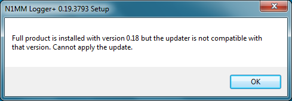
  </figure>

  <p>Se você vê esta mensagem, baixe o instalador Full mais recente e instale-o. Você não precisa desinstalar a versão anterior; o novo instalador completo vai sobrescrever qualquer versão antiga que precise ser atualizada. Depois que o instalador completo tiver executado, você será solicitado a reiniciar seu computador para completar o processo de atualização de arquivos de sistema; isto só acontece com o instalador completo, não com atualizações normais usando o instalador Latest Update mais recente. Depois que a instalação completa tiver terminado e seu computador tenha sido reiniciado, você pode proceder para instalar a atualização mais recente se seu número de versão menor for diferente do número de versão menor do instalador completo que você acabou de executar.</p>

  <h3 id="manually-install-update">Manually Installing a Latest Update (Instalando Manualmente uma Atualização Mais Recente)</h3>

  <p>Se você encontrar um erro ao tentar instalar automaticamente um Latest Update, você vai precisar obter o arquivo da forma antiga. Para atualizar manualmente:</p>

  <ul>
    <li>Vá para o site</li>
    <li>Navegue até &gt;Downloads &gt;Program Files &gt;<a href="https://n1mmwp.hamdocs.com/mmfiles/categories/programlatestupdate/" target="_blank" rel="noopener">Latest Update Files</a></li>
    <li>Clique com botão direito e baixe o arquivo exe "Latest Update" mais recente</li>
    <li>Execute aquele arquivo EXE localmente a partir do Windows File Explorer</li>
  </ul>

  <p>Daí em diante as Atualizações vão retomar notificações automáticas.</p>

  <h2 id="moving-new-computer">Moving N1MM Logger+ to a New Computer (Movendo N1MM Logger+ para um Novo Computador)</h2>

  <p>A abordagem mais fácil e melhor é simplesmente executar o Full Installer e Latest Update para instalar o programa no novo computador. Agora copie sua pasta de arquivos de usuário <strong>N1MM Logger+</strong> e subpastas da máquina antiga para a localização de arquivos de usuário na nova. Sobrescreva qualquer versão "starter" de arquivos e pastas que já estejam lá. (Note: em cada computador, a pasta de arquivos de usuário pode ser encontrada executando o N1MM+ e usando o item de menu <strong>Help &gt; Open Explorer on User Files Directory</strong>.)</p>

  <p>Recomendamos deletar ou renomear seu arquivo antigo <strong>N1MMLogger.ini</strong>, para que o programa crie um novo. Você pode tentar manter o arquivo .ini antigo, mas você provavelmente vai perceber que seu arquivo .ini antigo não vai funcionar propriamente, porque números de porta, endereços de porta, números de placa de som e outros itens relacionados ao hardware no arquivo .ini provavelmente vão ser diferentes na máquina nova. É muito mais fácil fazer essas mudanças no Configurer do que usar o Notepad e editar o arquivo .ini antigo.</p>

  <h2 id="moving-classic">Moving Data from an N1MM Logger Classic Installation to N1MM Logger+ (Movendo Dados de uma Instalação N1MM Logger Classic para N1MM Logger+)</h2>

  <p>Como mencionado acima, o N1MM Logger+ armazena todos os dados criados pelo usuário, incluindo bancos de dados, arquivos de mensagem de function key, arquivos .wav, arquivos Call History, e arquivos de Contest Definidos pelo Usuário na pasta de arquivos de usuário do N1MM Logger+. Você vai precisar copiar cada tipo de arquivo para a pasta apropriada a partir de onde você estava armazenando-os na instalação do N1MM Logger Classic.</p>

  <p>Desde que o N1MM Logger+ usa um esquema de banco de dados inteiramente diferente, há uma opção no menu File na Entry Window para importar e converter bancos de dados para uso com o N1MM Logger+. Clique em Convert N1MM database to N1MM Logger+, selecione seu banco de dados antigo, e uma versão convertida será colocada na pasta certa, pronta para uso. Isto só se aplica a bancos de dados, though — informações de configuração que eram armazenadas no N1MM Logger.ini não podem ser convertidas automaticamente. Você vai ter que configurar esses itens usando o Configurer do N1MM Logger+. Alguns outros arquivos de suporte, como arquivos de mensagem de function key (.mc), arquivos User Defined Contest (.udc), arquivos Call History, etc. vão funcionar diretamente; você pode simplesmente copiá-los a partir da pasta de programa N1MM Logger Classic e copiá-los para a subpasta apropriada na área de arquivos de usuário do N1MM Logger+.</p>

  <h3 id="converting-databases">Converting Old N1MM Logger Classic Databases (Convertendo Bancos de Dados N1MM Logger Classic Antigos)</h3>

  <p>Houve várias mudanças na estrutura de banco de dados do N1MM Logger Classic ao longo dos anos. O N1MM Logger Classic continha código para atualizar seus bancos de dados automaticamente se um banco de dados antigo era aberto com uma versão mais recente do código. Este código de atualização automática não foi incorporado nas rotinas de conversão de banco de dados no N1MM Logger+. <strong>O único formato de banco de dados suportado nas rotinas de conversão é aquele usado na versão 14.0.0 do N1MM Logger Classic (e mais recente).</strong> Portanto, se você deseja converter um banco de dados que foi criado em uma versão anterior do N1MM Logger Classic e que nunca foi aberto por uma versão de programa 14.0.0 ou mais recente, você precisa executar a conversão em dois passos: 1. Abra o banco de dados na versão 14.0.0 ou mais recente do N1MM Logger Classic e depois feche o N1MM Logger Classic (isto vai automaticamente atualizar a estrutura do banco de dados); e 2. Use a opção de menu N1MM Logger+ File mencionada acima para converter o banco de dados atualizado para o formato .s3db usado pelo N1MM Logger+.</p>

  <p><strong>Outra situação comum — você tem mais de um banco de dados no Classic, e você quer salvá-los todos juntos em um banco de dados N1MM+.</strong> Esta explicação detalhada do Rich, VE3KI:</p>

  <p>Para segurança, primeiro desligue o N1MM+ e faça uma cópia de backup de seu banco de dados N1MM+ existente. Está na subpasta Databases de sua pasta de arquivos de usuário do N1MM+, com o nome que você lhe deu quando converteu-o. A extensão do arquivo será s3db — por exemplo, ham.s3db ou Contests2014.s3db, ou o que quer que você o tenha chamado.s3db. Também haverá alguns outros arquivos s3db na mesma pasta — apenas deixe-os em paz.</p>

  <p>Inicie o N1MM Classic. Abra o banco de dados Classic que você quer converter. Faça os seguintes passos para cada contest naquele banco de dados: Abra o contest e faça uma exportação para ADIF. <strong>Não tente atalho tentando exportar todos os contests ao mesmo tempo.</strong> Cada contest tem que ser exportado separadamente para que ele tenha o Contest_ID correto em seu arquivo ADIF, e para que possa ser importado separadamente em sua própria instância de contest no banco de dados N1MM+.</p>

  <p>Agora feche Classic e abra o N1MM+. Crie um novo contest em seu banco de dados para o primeiro que exportou do Classic. O tipo de contest deve ser o mesmo que era no Classic. Defina a data e hora de início corretamente para aquele contest para que você possa distinguir contests do mesmo tipo no novo banco de dados. Uma vez que o contest esteja configurado corretamente, faça um File &gt; Import a partir do arquivo ADIF. Use Tools &gt; Rescore Current Contest para atualizar a pontuação para aquele contest. Repita esses passos para cada um dos outros contests que exportou. Todos os seus contests devem agora estar em um banco de dados N1MM+.</p>

  <h2 id="uninstalling">Uninstalling the Program (Desinstalando o Programa)</h2>

  <p>Se você está pensando em desinstalar e reinstalar o programa para corrigir um problema que encontrou, você deveria saber que isso é raramente a solução. A maioria dos problemas encontrados pelos usuários são problemas de configuração que não são resolvidos desinstalando e reinstalando. Se o problema é um problema de configuração, desinstalar e reinstalar no mesmo local não vai corrigi-lo. Em vez disso, <a href="https://n1mmwp.hamdocs.com/appendices/technical-information/#the-n1mm-logger-ini-file" target="_blank" rel="noopener">PROCURE AQUI</a> por sugestões para outros métodos menos drásticos.</p>

  <p>No entanto... se você realmente quer desinstalar o N1MM Logger+ completamente, incluindo quaisquer entradas de registro, a melhor maneira é navegar para o diretório de programa e encontrar o programa inteligentemente intitulado <strong>Uninstall.exe</strong> com o ícone N1MM Logger+. Execute o desinstalador e siga quaisquer instruções que veja. Note que isto não vai remover seus arquivos de usuário na pasta de arquivos de usuário do N1MM Logger+. Se você quer remover todos os traços do programa, você vai precisar remover esta pasta manualmente usando o Windows Explorer e o botão [Delete].</p>

</main>

<footer class="rodape">
  <div class="conteudo">
    Conteúdo original: <a href="https://n1mmwp.hamdocs.com/getting-started/installing-and-upgrading-n1mm-logger/" target="_blank" rel="noopener">N1MM Logger+ Documentation</a>,
    Copyright &copy; N1MM Logger+ Team. Tradução para PT-BR: comunidade brasileira de radioamadorismo.
    Esta é uma tradução não-oficial, sem vínculo com os autores originais.<br>
    Projeto do <a href="https://gg52floripadx.com/" target="_blank" rel="noopener">GG52 Floripa DX</a> — iniciativa de <a href="https://pp5kj.com" target="_blank" rel="noopener">PP5KJ</a>.
  </div>
</footer>

</body>
</html>
